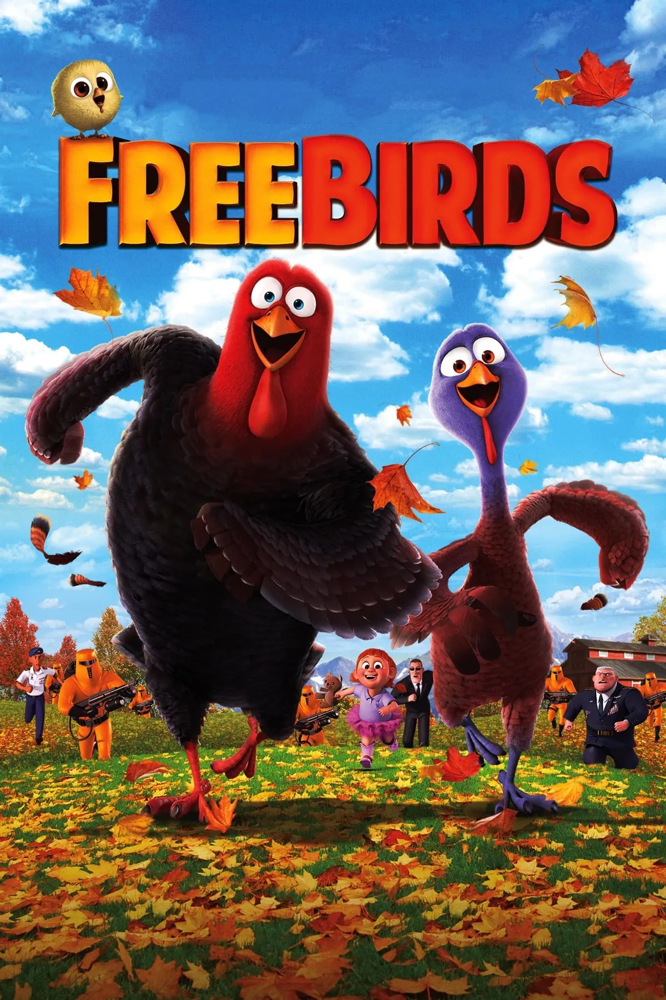

Make a video game cover
We’re building Free Birds together. Follow along, then use these skills for your own game.

What you’ll learn
Selections · Layers · Color · Text
SetupStep 01 of 16
Start your Free Birds cover
01 / 16Build your cover, one new skill at a time.
Follow along
Try each action in Photopea. Use the screenshots to check what you’re doing.
Save your work before we continue
In Photopea, choose File → Save as PSD. Check that your latest .psd download has finished before continuing.
Check your cover
Need a hand?
Try one of these quick fixes.
Your work lives in Photopea. Remember to save your editable PSD as you go.